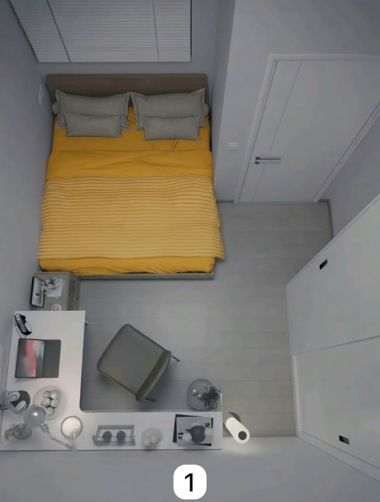
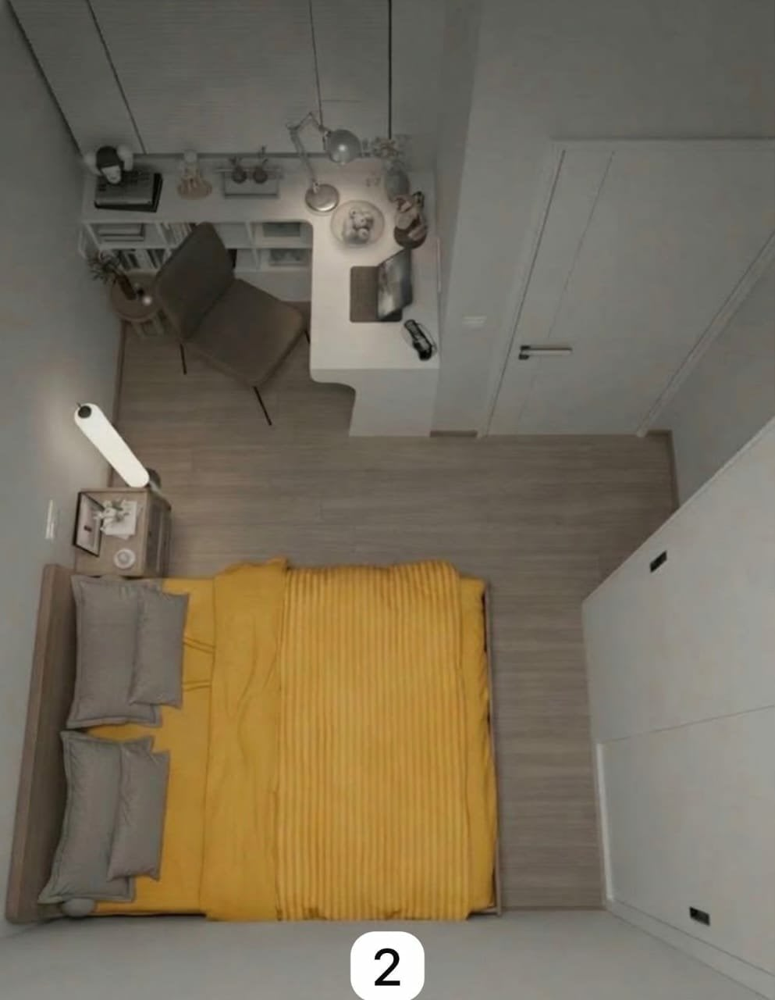

자취하면 1 부모님집이면 2
2로하면 방 ㅈㄴ 좁아보임 해봐서 암 1이 훨 나음 그리고 햇볕도 아침에 창에서 바로 직각으로 꼽히는게 아니라 대각선 비스듬하게 들어와서 2가 햇빛 먼저 들어옴
일할때 창너머로 보여서 더 넓게쓸거같은디
2번은 사실상 침대 밑부분 데드스페이스임.
비싸게 평수늘려서 월세니 대출갚는데 저렇게 버리노
맞네 데드스페이스
침대 밑부분 옷장 문있어서 저 정고 공간은 있어야 돰
진짜 저공간은 옷장여는 그 몇십초때매 비워두는공간 생겨버림. 그래도 데드스페이스라는 말은 변함이 없다...
요즘 메트릭스 리프팅 침대광고가 진짜잘하더라 ㅋㅋ 평수늘려 비싼집 사왔는데 침대때문에 밑에 1-2평가량을 버리게되는데 리프팅타입으로 버튼하나로 메트릭스를 통으로 들어버려서 수납공간 활용한다고
매트리스... 매트릭스는 행렬...
요즘 딥러닝배우고있어서 햇갈렸당..
훌륭하네 뭘 배운다니
작업많이 하는 곳에 따라 다를 듯
1
좁은방에 침대가 쓸대없이 크네. 2번에서 침대 슈퍼싱글로 바꾸고 머리방향 바꾸면 딱 맞음
1번은 추워....
2
1
1은 잘 때 추워........
1번은 책상 이용중에 나갔다 들어올때마다 침대 겁나 걸리적 거릴거 같은데..
2번이좋아 1은 웃풍 추워...
2로 배치하면 남는공간이 진짜 딱 통로밖에없음 문 열자마자 침대로 꽉차있는게보여서 좁아보여
문을 등지고 책상에서 뭔갈 하고싶지않아
학생때의 PTSD가 떠올라
갠적으론 책상이 창문 바라보는게 좋은 것 같음
닥1, 2번 침대와 수납장사이 데드스페이스 특히 저런좁은공간에는 조금이라도넓은게 생명 근데 창문위치자체가 아쉬워서 1도 좀 아쉽다.. 창문은 무조건 문을바라봐야함
창문때문에 무조건 2
2번이 좋아 일하다 힐들때마다 바깥풍경보고 있으면
조금 괜찮아짐
1처럼 창가에 침대는 별로
아침에 잘 못 일어날 수 있음
2번이 동선은 편해보임